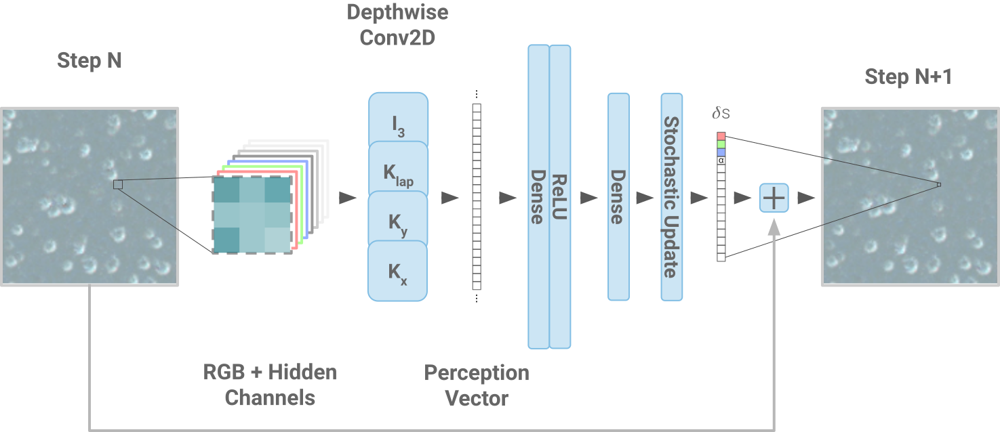
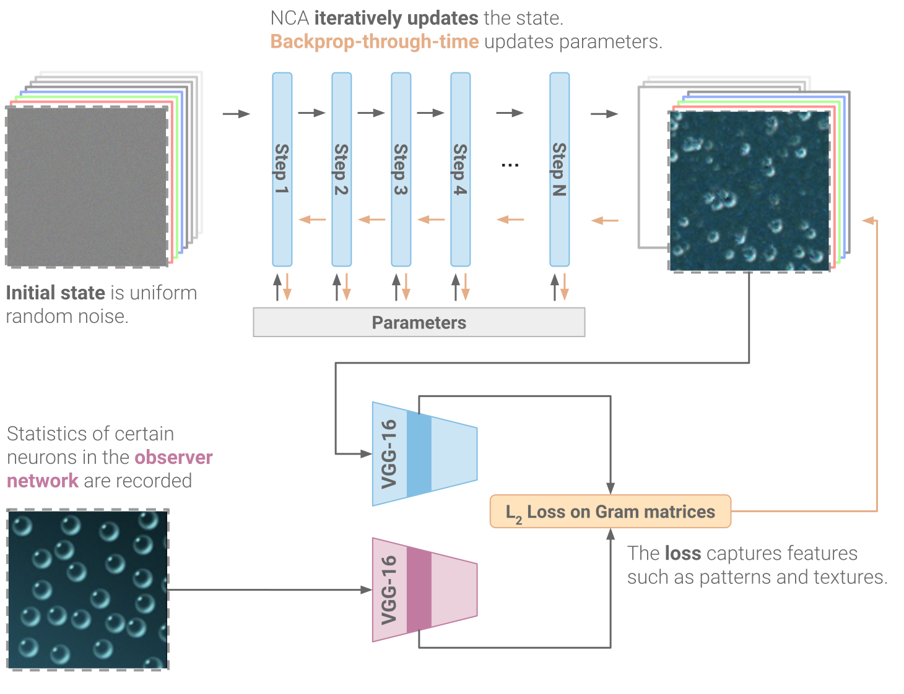
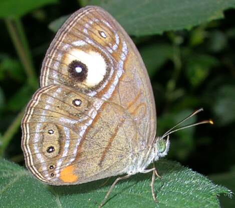
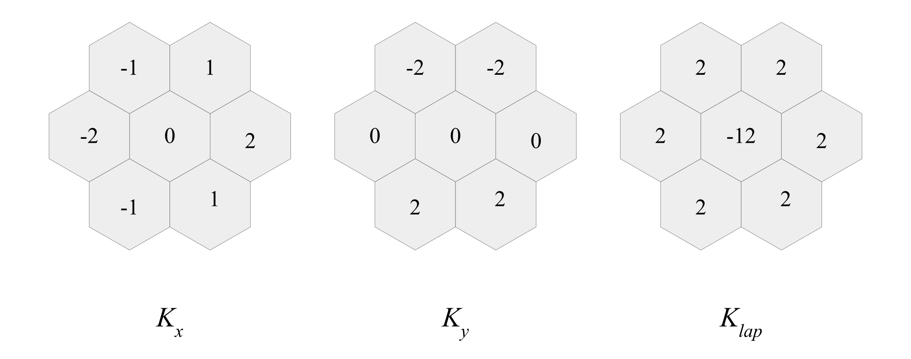
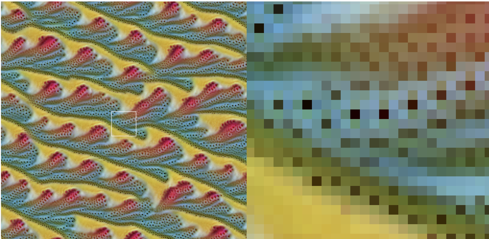
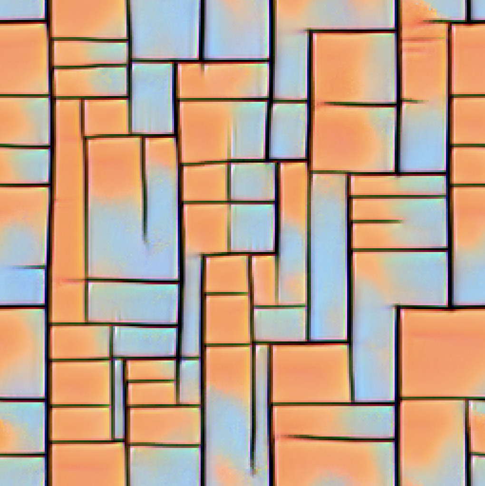
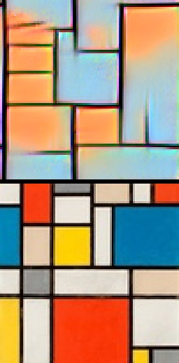

本文是 专题：可微分自组织系统 的一部分。该专题以实验性形式，收集了多位受邀作者撰写的短文，深入探讨可微分自组织系统，并穿插来自邻近领域多位专家的批判性评论。
自分类 MNIST 数字
神经元胞自动机的对抗性重编程
神经元胞自动机（NCA[1]）能够学习多种多样的行为：从生成稳定、可再生、静态的图像[[Mordvintsev_Randazzo_Niklasson_Levin_2020]]，到对图像进行分割[[Sandler_Zhmoginov_Luo_Mordvintsev_Randazzo_Arcas_2020]]，再到学会“自我分类”形状[[Randazzo_Mordvintsev_Niklasson_Levin_Greydanus_2020]]。元胞自动机带来的归纳偏置非常强大。由大量个体智能体运行同一套习得的局部规则，就能解决出奇复杂的任务。此外，单个智能体或细胞即使相隔很远，也能学会协调自身行为。从构造上讲，它们以高度并行且本质上具有简并性[2]的方式完成这些任务。每个细胞都必须能够承担其他任何细胞的角色——因此它们往往能很好地泛化到未见过的情境。
在这项工作中，我们将 NCA 应用于纹理合成任务。该任务的目标是重现纹理模板的整体外观，而非生成像素级完全一致的副本。我们将重点关注那些允许一定程度模糊性的纹理损失函数。在训练 NCA 模型重现纹理之后，我们进一步研究它们习得的行为，并观察到了一些令人惊讶的效果。基于这些观察，我们认为细胞学会了分布式、局部的算法。
为此，我们采用了一个老技巧：将神经元胞自动机作为可微分图像参数化方法[[Mordvintsev_Pezzotti_Schubert_Olah_2018]]。
模式、纹理与物理过程
斑马条纹是一种标志性的纹理。几乎任何人看到一组图像都能毫不费力地认出斑马条纹。如果你让他们描述斑马条纹的样子，他们会很乐意告诉你那是一些宽度略有变化、黑白交替的平行条纹。然而，他们也可能会告诉你，没有两只斑马的条纹完全相同[3]。这是因为进化让负责生成斑马图案的细胞学会了产生具有特定性质和特征的图案，而不是给它们提供精确的位图蓝图，规定条纹的边缘和位置，再将其“贴”到斑马身体表面。
换句话说，模式和纹理是定义不清晰的概念。剑桥英语词典将“pattern”（模式）定义为“任何有规律重复的排列，尤其是在表面上由重复的线条、形状或颜色构成的设计”。当我们面对那些传达某种感觉或质感而非特定重复属性的模式和纹理时，这个定义很快就失效了。例如，一块彩色的毛绒地毯可以被视为一种模式或纹理，但它由随机指向不同方向、尺寸和颜色有微小随机变化的纤维组成，并没有可辨识的规律性。彭罗斯拼砖不会重复（它们不是平移不变的），但任何人看到都会将其描述为模式或纹理。自然界中的大多数模式都是局部相互作用过程的产物，这些过程可能具有随机性，但往往基于相当简单的规则。关于自然界中这类模式生成模型的研究已有大量成果，其中大部分都受到图灵关于形态发生的开创性论文的启发。[[Turing_1952]]
这类模式在发育生物学中非常常见[[Marcon_Sharpe_2012]]。除了皮毛颜色和皮肤色素沉着之外，尽管底层动态具有随机性，但仍能产生不变的大尺度模式，这也是外周神经网络、血管网络、体节（胚胎发生过程中分化出的组织块，可发育成多种器官）、以及包括整个身体布局（例如蛇和蜈蚣）和附肢（例如脊椎动物肢体中指域的划分[[Schaerli_Munteanu_Gili_Cotterell_Sharpe_Isalan_2014]][[Hiscock_Tschopp_Tabin_2017]][[Raspopovic_Marcon_Russo_Sharpe_2014]]）在内的解剖结构和基因层面特征分节的关键特征。这些模式由反应-扩散过程、生物电信号传递、平面极性以及其他细胞间通讯机制生成[[Landge_Jordan_Diego_Müller_2020]][[Pietak_Levin_2017]][[Brodsky]][[Goldbeter_2018]]。生物学中的模式不仅是结构性的，也包括生理性的，例如大脑中的电活动波和基因调控网络的动态。例如，这些基因调控网络能够支持足够复杂的计算，以至于会出现说谎者悖论[4]。研究这类模式的涌现与调控，不仅有助于我们理解它们的进化起源，还能帮助我们理解它们如何被识别（无论是通过第二观察者的视觉系统，还是再生过程中相邻细胞的识别），以及如何通过调控实现再生医学的目的。
因此，当我们让某个模型学习生成纹理或模式时，我们希望它学会的是该模式的生成过程。我们可以将这样的过程理解为从支配该模式的分布中进行采样的手段。第一个难关是选择合适的损失函数，或者说对模式的定性度量。为此，我们采用了 Gatys 等人的思想[[Gatys_Ecker_Bethge_2015]]。NCA 成为一幅图像的参数化形式，我们将其“风格化”为目标模式的风格。在这里，我们不是对已有的图像进行重风格化，而是从完全无约束的设置开始：一个未经训练、随机初始化的 NCA 的输出。NCA 充当“渲染器”或“生成器”，而一个预训练的可微分模型则作为模式的区分器，提供梯度信号，使渲染器学会生成特定风格的模式。
从图灵，到元胞自动机，再到神经网络
NCA 非常适合生成纹理。要理解原因，我们需要展示自然界中的纹理生成与 NCA 之间的相似之处。基于这些相似性，我们认为 NCA 是纹理生成的一个良好模型类别。
偏微分方程
在《形态发生的化学基础》[[Turing_1990]]一文中，Alan Turing 提出，自然界中的模式形成（如前述的斑马条纹）背后可能是由偏微分方程建模的简单反应和扩散物理过程。此后，人们进行了大量工作来寻找模拟反应-扩散的 PDE 并评估其行为。其中一个备受推崇的例子是 Gray-Scott 反应扩散模型([[Lee_McCormick_Ouyang_Swinney_1993]],[[Pearson_1993]])。这个过程展现出丰富多样的有趣行为，仅仅通过调整两个参数就能探索。我们强烈建议读者访问这个交互式图谱，来感受隐藏在两个简单旋钮背后的极端多样的行为。更勇于尝试的读者甚至可以在本地或浏览器中运行模拟。
为了解决重现纹理的问题，我们提出了一种更通用的版本，即用一个简单的偏微分方程（PDE）描述图像状态空间上的动力学。
[交互图 — 查看原文：https://distill.pub/selforg/2021/textures]
这里，f是一个依赖于状态空间的梯度（\nabla_\mathbf{x} \textbf{s}）和拉普拉斯算子（\nabla_\mathbf{x}^{2}\textbf{s}）的函数，它决定了该状态空间随时间的变化。s表示一个 k 维向量，其前三个分量对应可见的 RGB 颜色通道。
直观上，我们定义了一个系统，其中图像的每一点都随时间变化，其变化方式取决于图像当前在空间上（相对于其紧邻区域）的变化方式。读者可能会开始意识到，这与另一个基于纯局部相互作用的系统非常相似。
走向元胞自动机
支配自然现象的微分方程通常通过数值微分方程求解器来求值。事实上，有时这是唯一可行的方法，因为许多感兴趣的 PDE 和 ODE 没有闭式解。即使是一些看似简单的方程也是如此，例如三体问题。数值求解 PDE 和 ODE 是一个庞大且成熟的领域。在数值求解微分方程的“工具箱”中，最重要的工具之一就是离散化：将系统的变量从连续空间转换为离散空间，使数值积分变得可行。例如，当使用某些 ODE 来模拟现象随时间的变化时，以离散的步长（可能是可变的）推进时间是合理的。
现在我们证明，对上述 PDE 进行数值积分，等价于将其重构为神经元胞自动机，其中 f 承担 NCA 规则的角色。
对 PDE 所作用的空间进行离散化的逻辑方法，是将连续的二维图像空间离散化为二维栅格。边界条件是一个问题，但我们可以通过切换到环面世界来解决——每个维度在边界处与自身相连。
与空间类似，我们选择以离散方式处理时间，并在固定大小的时间步上评估 NCA。这等价于显式欧拉积分。然而，这里我们对传统的 PDE 数值积分方法做了重要偏离，原因有二。首先，如果所有细胞同步更新，初始条件 s_0 必须在细胞间有所不同才能打破对称性。其次，同步模型的物理实现需要一个所有细胞共享的全局时钟。绕过前者的方法之一是用随机噪声初始化网格，但本着自组织的理念，我们选择通过异步评估 CA 来解耦细胞更新。我们在每个时间步采样所有细胞的一个子集进行更新。这既引入了时间上的异步性（细胞有时会基于邻居若干时间步之前的信息进行计算），也引入了空间上的不对称性，从而同时解决了上述两个问题。
我们将 PDE 表示为元胞自动机的下一步，是对梯度和拉普拉斯算子进行离散化。为此，我们使用Sobel 算子和离散拉普拉斯算子的九点变体，如下所示。
[交互图 — 查看原文：https://distill.pub/selforg/2021/textures]
所有要素就位后，我们现在得到了该 PDE 在空间上离散化的版本，它看起来非常像元胞自动机：栅格中每个离散点的时序演化仅依赖于其紧邻的邻居。这些离散算子使我们能够将 PDE 形式化为一个 CA。为了验证这一点，只需观察：当我们的网格变得非常精细，且异步更新趋近于均匀时，这些离散算子的动力学将重现我们最初定义的连续 PDE 的动力学。
走向神经网络
实现上述通用 PDE 用于纹理生成的最后一步，是将其翻译成深度学习的语言。幸运的是，迭代评估广义 PDE 所涉及的所有操作，在大多数深度学习框架中都是常见操作。我们提供了 TensorFlow 和极简 PyTorch 实现作为参考，并引导读者从这些实现中了解细节。
NCA 作为模式生成器
模型：

我们基于 Growing CA NCA 模型[[Mordvintsev_Randazzo_Niklasson_Levin_2020]]构建，内置了权重量化、随机更新以及用于近似长期训练的批次池机制。关于模型和动机的更多细节，请参阅该工作。
损失函数：

我们使用著名的用于图像识别的深度卷积网络 VGG（Visual Geometry Group Net [[Simonyan_Zisserman_2014]]）作为可微分的纹理区分器，理由与 Differentiable Parametrizations[[Mordvintsev_Pezzotti_Schubert_Olah_2018]]中所述一致。我们从一张模板图像 \vec{x} 开始，将其输入 VGG。然后从特定层（block1…5_conv1）收集统计信息，即这些层中神经元的原始激活值。最后，我们让 NCA 前向运行 32 到 64 步，将得到的 RGB 图像输入 VGG。我们的损失是 NCA 输入下这些神经元激活的 Gram 矩阵[5]与模板图像输入下激活的 Gram 矩阵之间的 L_2 距离。我们保持 VGG 的权重冻结，并使用 ADAM[[Kingma_Ba_2014]] 更新 NCA 的权重。
数据集：
该数据集的模板图像来自 Oxford Describable Textures Dataset[[Cimpoi_Maji_Kokkinos_Mohamed_Vedaldi_2013]]。该数据集旨在为衡量视觉模型识别、分类纹理以及用语言描述纹理的能力提供基准。这些纹理被收集来匹配 47 个“属性”，例如“bumpy”（凹凸不平）或“polka-dotted”（波点）。这 47 个属性又是从 Bhusan、Rao 和 Lohse 确定的用于描述纹理的常用词汇中提炼而来[[Bhushan_Rao_Lohse_1997]]。
结果：
经过几次迭代的训练后，我们看到 NCA 收敛到一个乍看起来与输入模板相似、但像素级并不完全一致的解。首先要注意的是，如果我们继续迭代 CA，NCA 学到的解并不是时不变的。换句话说，它一直在变化！
这并不完全出乎意料。在 Differentiable Parametrizations 中，作者注意到，由于参数化的随机性，每次运行算法时反向传播到图像空间产生的图像都会不同。为了解决这个问题，他们引入了一些技巧来保持不同可视化之间的对齐。在我们的模型中，我们发现无需专门优化就能在时间维度上获得这种对齐，这是一个惊喜。我们认为原因有三。首先，在 NCA 中达到并维持静态状态似乎比动态状态更困难，以至于在 Growing CA 中必须维护一个包含不同迭代时刻 NCA 状态的池，并从中采样作为起始状态，以模拟在超过 NCA 迭代周期的时间后施加损失，从而实现静态稳定。我们在这里也采用了相同的采样机制来防止模式衰减，但本次的损失并不强制要求一个静态的固定目标，而是引导 NCA 走向任意一个能最小化风格损失的状态。其次，我们在 NCA 随机次数的迭代之后施加损失。这意味着在任意给定时间步，模式都必须处于能最小化损失的状态。第三，随机更新、局部通讯和量化都限制并正则化了每次迭代的更新幅度。这鼓励相邻两次迭代之间的变化很小。我们推测，这些性质共同促使 NCA 找到一个每一步都与前一步对齐的解。我们通过时间感知到这种对齐表现为运动，当我们迭代 NCA 时，会观察到它在由局部对齐的解构成的流形上穿行。
基于上述发现和对 NCA 的定性观察，我们现在认为，找到时间上对齐的解，等价于找到一个生成模板模式的算法或过程。接下来我们展示在不同模板图像上训练的 NCA 的一些令人兴奋的行为。
[交互图：一个被训练成生成 chequered_0121.jpg 风格模式的 NCA。 — 查看原文：https://distill.pub/selforg/2021/textures]
这里，我们看到 NCA 使用一张简单的黑白网格模板图像进行训练。
我们注意到：
这种行为与人们预期的手工设计算法（使用局部通讯生成一致网格）的表现并不完全不同。例如，一种可能的手工设计方法是：首先让细胞尝试通过选择周围细胞中最常见的颜色来实现局部一致性，然后通过测量到这片一致颜色区域四条边的距离来尝试形成正确大小的菱形，如果不正确则移动边界。距离可以通过使用隐藏通道在每个感兴趣的方向上编码梯度来测量，每个细胞相对于其在该方向上的邻居减小该通道的幅度。然后细胞可以通过测量两个这样的梯度通道的值来确定自己在菱形中的位置。这样的算法看起来会与上述行为相似——成片的细胞变成黑色或白色菱形，然后调整自身大小以达到一致性。
[交互图：一个被训练成生成 bubbly_0101.jpg 风格模式的 NCA。 — 查看原文：https://distill.pub/selforg/2021/textures]
在这段视频中，NCA 学会了根据蓝色背景上清晰气泡的模板重现纹理。我们观察到的最有趣的行为之一是气泡的密度保持相当恒定。如果我们重新初始化网格状态，或交互式地破坏某些状态，我们会看到大量气泡重新形成。然而，一旦两个气泡靠得太近，其中一个就会自发坍缩并消失，从而确保整个图像中气泡密度恒定。我们将这些气泡视为 NCA 解空间中的“孤子”。这是一个我们将在下文中详细讨论和研究的概念。
如果我们加快动画速度，会看到不同的气泡以不同速度移动，但它们从不碰撞或接触。气泡还能通过自我纠正来维持自身结构；受损的气泡可以重新生长。
这种行为非常引人注目，因为它是在没有任何外部或辅助损失的情况下自发出现的。所有这些性质都是从模板图像、VGG 各层中存储的信息以及 NCA 的归纳偏置共同作用下学到的。NCA 学会了一条规则，能有效近似原始图像中气泡的许多特性。而且，它学会了一个生成该模式的、能抵抗损伤且对人类而言看起来真实的过程。
[交互图：一个被训练成生成 interlaced_0172.jpg 风格模式的 NCA。 — 查看原文：https://distill.pub/selforg/2021/textures]
这里我们看到我们最喜欢的模式之一：一个简单的几何“编织”图案。同样，我们注意到 NCA 似乎学会了一个生成该模式的算法。每条“线”交替地与其他线合并或分离，以产生最终的图案。这与如果要求你用程序生成上述图案时会尝试实现的内容惊人地相似。你会尝试设计某种随机算法，将单个线条与附近的其他线条编织在一起。
[交互图：一个被训练成生成 banded_0037.jpg 风格模式的 NCA。 — 查看原文：https://distill.pub/selforg/2021/textures]
这里，未对齐的条纹片段沿着条纹向上或向下移动，直到它们合并成一条笔直的条纹，或者某条条纹缩小并消失。如果用局部通讯以算法方式实现这一点，那么使用类似的在条纹间寻找一致性的算法并非不可行。
相关工作
这种对模式生成的研究绝非首次。在深度学习出现之前已有大量工作，特别是提出了解剖结构的空间模式与认知和计算过程的时间模式之间存在深刻联系（例如综述于[[Pezzulo_Levin_2015]]）。古典发育生物学的英雄之一 Hans Spemann 曾说：“一次又一次地使用的术语指向的不是物理而是心理类比。这不仅仅是诗意的隐喻。我的信念是，一个具有多种潜能的胚胎片段在胚胎‘场’中的适当反应……不是普通的化学反应，就像所有生命过程一样，我们对其了解程度最高的生命过程无一能与之相比。”[[Speman_1938]]。近年来，Grossberg 定量地阐述了发育模式与计算神经科学之间的重要相似性[[Grossberg_1978]]。如前所述，大部分工作的灵感来自图灵关于通过局部相互作用生成模式的工作，以及后续基于这一原则的论文。不过，我们也想承认一些我们认为与我们的工作特别有亲缘性的研究。
补丁采样
早期模式生成工作主要集中在纹理采样上。通常从原始图像中采样补丁，然后以不同方式重建或重新拼接，以获得对纹理的近似。这种方法在 Gumin 的工作[[Gumin]]中也取得了最新的成功。
深度学习
Gatys 等人的工作[[Gatys_Ecker_Bethge_2015]]（本文中多次引用）在“预训练网络中某些层的统计量可以捕捉图像中的纹理或风格”这一思想上具有开创性。在此基础上已有大量工作，包括尝试其他图像生成参数化方法[[Mordvintsev_Pezzotti_Schubert_Olah_2018]]以及优化生成过程[[Ulyanov_Lebedev_Vedaldi_Lempitsky_2016]]。
另一些工作则专注于将卷积生成器与补丁采样结合，并使用对抗损失训练，以产生质量相似的纹理[[Xian_Sangkloy_Agrawal_Raj_Lu_Fang_Yu_Hays_2018]]。
伪装的交互式进化
或许与我们最有共鸣的最非传统的方法，是 Interactive Evolution of Camouflage[[Reynolds_2011]]中提出的方法。Craig Reynolds 使用一种由生成器和运算符组成的纹理描述语言来参数化纹理块，并将其呈现给人类观察者，后者需要判断哪些块在选定的背景纹理上“伪装”自己最差。然后种群以进化方式更新，以最大化“伪装”效果，经过若干迭代后产生对人眼而言伪装效果最好的纹理。我们在其中看到了与我们工作强烈的相似之处——我们不是使用纹理生成语言，而是用 NCA 来参数化纹理；我们不是使用人类评审者，而是用 VGG 作为生成模式质量的评估者。我们认为一个根本区别在于 NCA 的解空间。纹理生成语言带有若干归纳偏置，并学习从坐标到颜色的确定性映射。而我们的方法似乎学会了更通用的算法和行为，这些算法和行为共同产生了目标模式。
另外两个值得注意的类似工作是 Portilla 等人的基于小波变换的工作[[Portilla_Simoncelli_2000]]，以及 Chen 等人的基于反应扩散的工作[[Chen_Pock_2017]]。
特征可视化

我们已经探索了当给出模板图像时 NCA 学会的一些迷人行为。如果我们想让它们学会更“无约束”的行为呢？
有些蝴蝶的翅膀上有极其逼真的眼睛图案。蝴蝶自己很可能并不知道自己身上有这种惊人的艺术作品。进化将其置于那里，是为了在潜在捕食者中引发恐惧反应，或转移它们的攻击[[Kodandaramaiah_2011]]。很可能无论是捕食者还是蝴蝶，都没有“眼睛是什么”或“眼睛有什么功能”的概念，更不用说关于对方意识的心智理论了，但进化已经在这个生物的形态空间中找到了一个区域，该区域利用捕食者的模式识别特征，诱使它们害怕一只无害的虫子而不是吃掉它。
更令人惊叹的是，组成蝴蝶翅膀的单个细胞能够自我组装成远大于单个细胞的连贯、美丽的形状——细胞的尺度大约是 1^{-5}m[[Ohno_Otaki_2015]]，而翅膀上的特征可以长到 1^{-3}m[[Iwata_Otaki_2016]]。产生这些特征所需的协调，意味着数百甚至数千个细胞的自组织，以生成一个连贯的眼睛图像，而这个图像仅仅是为了给完全不同物种提供视觉刺激而进化出来的，原因正是细胞间通讯的局部性。当然，这与动植物体内发生的形态发生相比相形见绌，后者中由数百万细胞组成的结构会特化并协同工作以生成目标形态。
研究神经网络的一种常见方法是观察什么会抑制或激活网络中的单个神经元[[Schubert_Petrov_Carter_Cammarata_Goh_Olah_2020]]。正如神经科学家和生物学家经常将细胞、细胞结构和神经元视为黑箱模型进行研究、测量和逆向工程一样，当代也有大量关于对神经网络做同样事情的工作。例如 Boettiger 的工作[[Boettiger_Ermentrout_Oster_2009]][[Boettiger_Oster_2009]]。
我们可以通过极小的努力来探索这个想法：使用我们的模式生成 NCA，并让它进入能激发 Inception 中某个给定神经元的状态。我们注意到最常见的结果之一是眼睛和与眼睛相关的形状——如下面的视频所示——这很可能是因为需要在 ImageNet 中检测各种动物。正如细胞在蝴蝶翅膀上形成眼睛图案以激活捕食者大脑中的神经元一样，我们的 NCA 细胞种群也学会了协作，产生能激发外部神经网络中某些神经元的模式。
[交互图：一个被训练成激发 Inception 中 mixed4a_472 的 NCA。 — 查看原文：https://distill.pub/selforg/2021/textures]
带有 Inception 的 NCA
模型：
我们使用与探索模式生成时相同的模型，但区分器网络换成了在 ImageNet 上训练的 Inception v1 网络[[szegedy2015going]]。
损失函数：
我们的损失在 NCA 输出上评估时最大化所选神经元的激活值。我们添加了一个辅助损失来鼓励 NCA 的输出为 \in [0,1]，因为模型本身并不内置这一约束。我们保持 Inception 的权重冻结，并使用 ADAM[[Kingma_Ba_2014]] 更新 NCA 的权重。
数据集：
该任务没有明确的训练数据集。Inception 是在 ImageNet 上训练的。我们选择要激发的层和神经元是使用 OpenAI Microscope 定性选择的。
结果：
与模式生成实验类似，我们看到快速收敛，并且倾向于找到时间上动态的解。换句话说，最终的 NCA 不会静止不动。我们还观察到大多数 NCA 学会了生成各种类型的孤子。我们下面讨论其中几个，但鼓励读者在演示中自行探索。
[交互图：一个被训练成激发 Inception 中 mixed4c_439 的 NCA。 — 查看原文：https://distill.pub/selforg/2021/textures]
表现为具有内部结构的规则类圆形的孤子在 Inception 生成的结果中相当常见。两个靠得太近的孤子可能会导致其中一个或两个衰减。我们还观察到孤子可以分裂成两个新的孤子。
[交互图：一个被训练成激发 Inception 中 mixed3b_454 的 NCA。 — 查看原文：https://distill.pub/selforg/2021/textures]
在由线条或线程组成的纹理中，或者在某些 Inception 神经元激发下产生的具有“线状”特性的 NCA 中，线条会沿着各自的方向生长，并会根据需要与其他线条合并或环绕它们。这种行为与模式生成实验中观察到的条纹图案中的规则线条相似。
其他有趣的发现
鲁棒性
切换流形
我们使用相同的固定拉普拉斯和梯度滤波器在 NCA 中编码局部信息流。幸运的是，这些滤波器可以针对大多数底层流形来定义，这使我们能够在各种表面和配置上放置细胞，而无需修改已学习的模型。假设我们希望细胞生活在一个六边形世界中。我们可以按如下方式重新定义核：

我们在纯方形环境中训练的模型，可以直接在六边形网格上工作！在演示中切换相应设置即可体验这一点。放大后可以观察到单个六边形或方形细胞。如演示所示，细胞能够毫无困难地适应六边形世界，并在短暂的重对齐后产生相同的模式。

旋转

理论上，只要能定义 Sobel 核和拉普拉斯核的近似，细胞就可以在任何流形上被评估。我们在演示中提供了一个上述的“六边形”世界供细胞生活，从而展示了这一点。每个细胞现在有六个等间距的邻居，而不是八个。我们进一步通过旋转 Sobel 和拉普拉斯核来展示这种多功能性。每个细胞会根据这些核获得一种内在的全局方向感，因为它们是相对于状态的坐标系定义的。用旋转的坐标系重新定义 Sobel 和拉普拉斯核很简单，甚至可以针对每个细胞单独进行。这种多功能性令人兴奋，因为它反映了自然界中生物细胞所具有的极端鲁棒性。大多数组织中的细胞无论其位置、方向或相对于邻居的精确排列如何，通常都能继续运作。我们相信我们模型的这种多功能性甚至可以扩展到细胞被随机放置在流形上、而非有序网格上的情境。
时间同步
[交互图：两个 NCA 并排运行，速度不同，且速度具有随机性。它们可以通过共享的边缘（即状态空间中心的那条垂直边界）进行通讯。 — 查看原文：https://distill.pub/selforg/2021/textures]
随机更新教会细胞对异步更新具有鲁棒性。我们将这一特性推向极端，研究当两个流形允许相互通讯，但其中一个运行 NCA 的速度与另一个不同时，细胞会如何反应。结果令人惊讶地稳定；CA 仍然能够在组合流形上构建并维持一致的纹理。两个共享状态的 CA 之间的时间差异远大于 NCA 在训练期间经历的任何情况，显示出所学行为的惊人鲁棒性。这可以与有机物质的自我修复相类比，例如指甲在成年后仍能重新生长，尽管下面的手指已经完全发育；两者不需要同步。这一结果也暗示了设计分布式系统的可能性，而无需为全局时钟、计算单元的同步，甚至同构的计算能力进行专门工程设计。
[交互图：一个 NCA 被评估若干步。然后周围的边界细胞也被变成 NCA 细胞。这些细胞能够毫无困难地与“已完成”的模式通讯并达到一致性。 — 查看原文：https://distill.pub/selforg/2021/textures]
时间异步性鲁棒性的一个更极端的例子如上所示。这里，一个 NCA 被迭代直到它在某个模式中达到完美一致性。然后状态空间被扩展，在现有状态周围引入一圈新的细胞。这圈边界迅速与现有细胞对接，并在几乎不扰动已经收敛的内部状态的情况下，稳定到一个一致的模式中。
失败案例
复杂系统的失败模式可以让我们深入了解其内部结构和过程。我们的模型有许多 quirks，有时这些 quirks 会阻止它学会某些模式。下面是一些例子。

有些模式在结构上被较为准确地复制，但颜色不对；而有些则相反。还有一些则完全失败。很难确定这些失败案例的根源是参数化（NCA）本身，还是来自 VGG 或 Inception 难以解释的梯度信号。现有的风格迁移工作表明，使用 VGG 中基于 Gram 矩阵的损失可能会引入不稳定性[[Risser_Wilmot_Barnes_2017]]，这与我们在这里看到的类似。我们推测这一效应解释了颜色重现的失败。而结构上的失败则可能由 NCA 参数化引起，它使得细胞难以建立长距离通讯。
隐藏状态
当生物细胞相互通讯时，它们通过多种可用的通讯通道进行。细胞可以释放或吸收不同的离子和蛋白质，感知其他细胞的物理运动或“刚度”，甚至释放不同的化学信号在局部基质上扩散[[Hadden_Young_2017]]。
有多种方法可以可视化真实细胞中的通讯通道。其中之一是向细胞中加入电压激活染料。这样做可以清晰地显示细胞相对于周围基质的电压电位。这种技术为细胞群内的通讯模式提供了有价值的洞见，并帮助科学家在各种时间尺度上可视化局部和全局通讯。
幸运的是，我们对神经元胞自动机也能做类似的事情。我们的 NCA 模型包含 12 个通道。前三个是可见的 RGB 通道，其余我们视为潜层通道，这些通道在更新步骤中对相邻细胞可见，但被排除在损失函数之外。下面我们将隐藏通道的前三个主成分分别映射到 R、G、B 通道。隐藏通道可以被认为是“浮动的”（借用电路理论中的术语）。换句话说，它们不会被损失拉向任何特定的最终状态或中间状态。相反，它们会收敛到某种动力系统，帮助细胞实现其关于可见通道的目标。不同的隐藏通道没有预先定义的不同角色或含义，而且不同隐藏通道之间几乎肯定存在冗余和相关性。这种相关性在我们单独可视化前三个主成分时可能看不出来。但抛开这一顾虑，这一可视化仍然产生了一些有趣的洞见。
[交互图：左：NCA 的 RGB 通道。右：隐藏状态前三个主成分的强度。一个被训练成激发 Inception 中 mixed4b_70 的 NCA。注意隐藏状态似乎编码了结构信息。沿主对角线（西北-东南）的“线”主要呈绿色，而沿反对角线的那些呈蓝色，表明尽管它们在 RGB 空间中几乎无法区分，但具有不同的内部状态。 — 查看原文：https://distill.pub/selforg/2021/textures]
在这个珊瑚状纹理的主成分中，我们看到一个与可见通道相似的模式。然而，指向每个对角线方向的“线”具有不同的颜色——一条对角线是绿色，另一条是浅蓝色。这表明隐藏状态编码的内容之一是“线”的方向，这可能是为了让位于这些线内部的细胞能够跟踪线在哪个方向上生长或移动。
[交互图：左：NCA 的 RGB 通道。右：隐藏状态前三个主成分的强度。一个被训练成基于 DTD 图像 cheqeuered_0121 生成纹理的 NCA。注意正方形的结构——每个正方形内部都有一个梯度，这表明结构正在被编码到隐藏状态中。 — 查看原文：https://distill.pub/selforg/2021/textures]
棋盘格图案同样适合进行定性分析，并暗示了一种相当简单的维持正方形形状的机制。每个正方形在 PCA 空间中沿对角线有一个清晰的梯度，而且白格和黑格所穿越的梯度值不同。我们认为这个梯度很可能被用来提供一个局部坐标系，以创建和调整正方形的大小。
[交互图：左：NCA 的 RGB 通道。右：隐藏状态前三个主成分的强度。一个被训练成激发 Inception 中 mixed4c_208 的 NCA。眼睛可见的身体部分在隐藏状态中被清晰地标定出来。还有一个“光晕”，似乎在调节紧邻的孤子之间的生长。这个光晕在 RGB 通道中几乎不可见。 — 查看原文：https://distill.pub/selforg/2021/textures]
我们在基于 Inception 训练的 NCA 中也发现了令人惊讶的洞见。在这个例子中，眼睛的结构被清晰地编码在隐藏状态中：主体主要由一组主成分组合构成，而一个似乎用于防止眼睛孤子相互碰撞的光晕则由另一组主成分构成。
对这些隐藏状态的分析有点像一门“黑魔法”；并不总是能得出严谨的结论。我们欢迎未来在这个方向上的工作，因为我们相信对这些行为的定性分析将有助于理解 CA 更复杂的行为。我们还推测，可能可以通过修改或改变隐藏状态来影响 NCA 的形态和行为。
结论
在这项工作中，我们选择纹理模板和单个神经元作为目标，然后优化 NCA 种群，以便在预训练的神经网络中产生相似的激发。这一过程产生了能够渲染细腻且催眠般纹理的 NCA。在分析过程中，我们发现这些 NCA 具有有趣且出乎意料的性质。许多生成图像中特定模式的解，似乎与产生该模式的底层模型或物理行为相似。例如，我们习得的 NCA 似乎偏好将模式中的对象视为独立个体，并允许它们在空间中自由移动。虽然这种效应在我们的许多模型中都存在，但在气泡和眼睛模型中表现得尤为强烈。NCA 被迫找到仅通过纯局部相互作用就能产生这种模式的算法。这种约束似乎产生了偏好高层一致性和鲁棒性的模型。
本文是 专题：可微分自组织系统 的一部分。该专题以实验性形式，收集了多位受邀作者撰写的短文，深入探讨可微分自组织系统，并穿插来自邻近领域多位专家的批判性评论。
自分类 MNIST 数字
神经元胞自动机的对抗性重编程